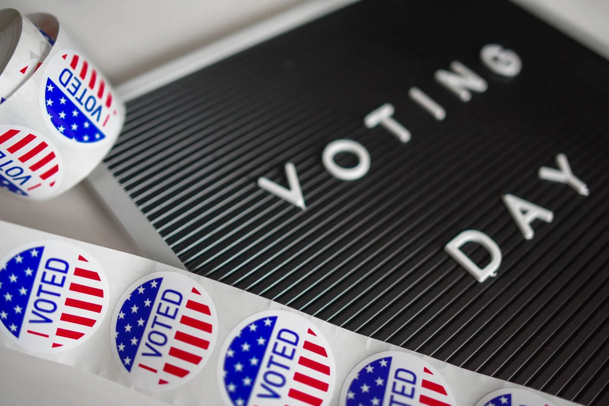

November 2
Tuesday after the first Monday in November
Election Day lesson: how an election works, taught in 30 minutes with a class vote
A nonpartisan, no prep lesson on how U.S. elections work: who votes, what is on a ballot, midterm and presidential years, and a class vote. Grades 3 to 12.
What it is
Federal law sets the Tuesday after the first Monday in November, in every even numbered year, as the day to elect members of the House of Representatives, and the National Archives gives the same rule for the presidential election that comes every four years. That makes Election Day November 3 in 2026, November 7 in 2028 and November 5 in 2030. State and local elections happen every year, so a local election can fall in an odd numbered year too.
To vote in a federal election a person must be a U.S. citizen, be 18 years old on or before Election Day, meet the state's residency requirements and be registered by the state's deadline. North Dakota does not require registration. States set some of the rules themselves, such as voter ID, so the details differ from state to state.
A ballot lists the candidates and the state or local issues up for a vote. Voters receive a ballot based on their address, so the offices and questions differ from place to place. In a presidential election, a vote for a presidential candidate is actually a vote for that candidate's preferred electors in the Electoral College.
Congressional elections happen every two years. All 435 House seats are up each time, and House members serve two year terms. The 100 senators serve six year terms, so a different third of the Senate is elected each time, and a state's Senate seat may not be on a given ballot. A midterm election takes place halfway between presidential elections: 2026 and 2030 are midterm years and 2028 is a presidential election year. Results reported on election night are unofficial until the ballots are counted, the canvass and any recounts are finished, and the results are certified.
How to run it
30 minutes, 5 steps. The time on the left is when each step starts.
-
0:00
Warm-up
4 minOn the boardThink of one decision a group made by voting. Who got to vote? Who counted the votes? How did everyone know the result was fair?
You do- Give one minute to think. Take three answers, such as a class vote, a team vote or a family vote.
- Write VOTERS, BALLOT and COUNT on the board as the words come up.
Say: Hold on to those three words. A real election has the same parts, only bigger.
-
4:00
The facts
6 minOn the board- Election Day is the Tuesday after the first Monday in November.
- To vote in a federal election: be a U.S. citizen, be 18 by Election Day, and be registered (North Dakota has no registration).
- All 435 House seats are up every two years. One third of the 100 senators are up each time, because senators serve six year terms.
- A midterm election falls halfway between presidential elections, which come every four years.
- Election night results are unofficial. Ballots are counted, checked, and then certified as official.
You do- Read the five facts aloud, one slide at a time.
- After the second fact, ask what "registered" might mean and why a state would want voters to be registered.
- After the fourth fact, ask a student to say in their own words what "halfway" means here.
Say: We are not talking about who should win. We are talking about how the system works.
-
10:00
Run a class election
12 minOn the boardClass vote: Which should we do first, Option A or Option B? 1. Registration: your name is checked on the class list. 2. Ballot: take one slip. 3. Mark it in private, A or B. 4. Fold it and put it in the box. 5. Count: two helpers tally. This count is unofficial. 6. Canvass: two different helpers count again. 7. Certify: the result is official only when both counts match.
You do- Choose two harmless options, such as which of two short read-alouds to hear next. Never use a choice that involves a person, a party or a topic that divides the class.
- Registration: read the roll. Each student whose name is checked off takes one blank slip.
- Voting: students write A or B in private, fold the slip and drop it in the box. No one looks at another student's slip.
- Counting: two student election workers open the slips and tally on the board. Write UNOFFICIAL next to the tally.
- Canvass: two other students recount and compare. If the tallies differ, all four count together.
- Certify: announce the result as official only after the second count matches. Then do what the class chose.
Say: Election night numbers are unofficial until they have been checked. That is why we count twice.
-
22:00
Debrief
5 minOn the boardWhere could a mistake happen in our election? What stopped it? Why check names? Why mark in private?
You do- Pairs talk for two minutes, then share.
- Match each step to the real thing. In a real election, voters register, receive a ballot, mark it privately, and place it in a ballot box or tabulator. Results shared after the polls close are unofficial. Once the canvass and any recounts are done, results are certified as official.
Say: A fair election is a set of small steps that people can check.
-
27:00
Exit ticket
3 minOn the boardIn one sentence: what is a midterm election?
You do- Students answer on a scrap of paper and hand it to you at the door.
Discussion questions
Open an answer when you want it.
How many House seats and Senate seats are on the ballot in a midterm year?
All 435 House seats and about one third of the Senate. A different third is up each time because senators serve six year terms, so a given state's Senate seat may not be on its ballot.
Why can two people in different towns have different ballots on the same Election Day?
A ballot is matched to the voter's address. The House district, the local offices and the local questions differ from place to place, and a state's Senate seat is not up every time.
Why are election night results called unofficial?
Ballots still have to be counted, the canvass and any recounts have to be finished, and then the results are certified as official. The Election Assistance Commission says some states report all their unofficial results within hours and others take up to 30 days to reach final results.
Name one thing that is the same in every state and one thing that can differ.
The date of federal Election Day is the same everywhere. Voter ID rules, registration deadlines and counting timelines can differ, because each state sets its own.
Exit ticket
In one sentence, what is a midterm election?
A midterm election is a congressional election held halfway between presidential elections. All House seats and one third of the Senate are on the ballot.
Make it fit your class
Younger students
For kindergarten to grade 2, skip the facts. Run only the class vote with two pictures or objects, and name the parts as you go: voters, ballot, count. Students put a counting stone or a check mark for their choice and watch the helpers count.
Older students
For grades 9 to 12, add the Electoral College from the National Archives: it has 538 electors, a candidate needs 270 electoral votes, the electors meet on the first Tuesday after the second Wednesday in December, and Congress counts the electoral votes in a joint session on January 6. Ask: when you vote for a presidential candidate, who are you actually voting for? (Answer: that candidate's preferred electors.)
Where the facts come from
- USA.gov, Congressional elections and midterm elections. Used for the definition of a midterm election, 435 House seats and two year terms, 100 senators and six year terms, and one third of the Senate each time.
- USA.gov, Congressional, state, and local elections. Used for state and local elections happening every year.
- USA.gov, Who can and cannot vote. Used for citizenship, age 18 by Election Day, registration, residency, and North Dakota not requiring registration.
- USA.gov, Voting on Election Day. Used for what sample ballots include, and each state setting its own voter ID rules.
- U.S. Election Assistance Commission, In-Person Voting 101. Used for the steps at a polling place, ballots based on address, ballot box or tabulator, unofficial results, canvass, recounts and certification, and counting times that vary by state.
- U.S. Election Assistance Commission, Voter FAQs. Used for registration in every state except North Dakota, and election night results being unofficial and never final.
- National Archives, What is the Electoral College?. Used for the Tuesday after the first Monday in November every four years, 538 electors, 270 needed, the December and January dates, and voting for preferred electors.
- Cornell Legal Information Institute, 2 U.S.C. 7, Time of election. Used for the Tuesday after the first Monday in November, in every even numbered year, as the day to elect members of the House.
Image credits
- I Voted Sticker Lot by Element5 Digital, Pexels License. Source.
Updated October 31, 2026